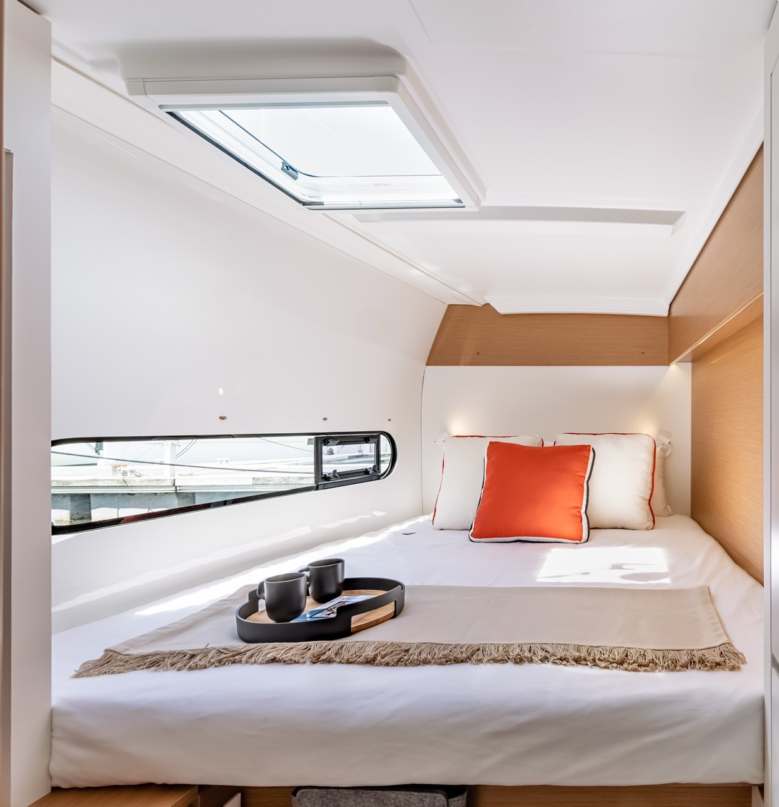

- 


船の紹介
Features of the yacht used
사용하는 요트의 소개
遊艇型號介绍
| 船種 | Excess 11 カタマランヨット |
|---|---|
| 船名 | FRIDAY |
| 全長 | 11.3m |
| 全幅 | 6.5m |
| 総トン数 | 約12トン |
| 進水年 | 2023年 |
| 船速 | セーリング：6～8ノット（風力による） エンジン航行：約7～10ノット |
| 定員 | 日帰り：最大10名 宿泊：最大4名 |
| ゲストルーム | 2室（ダブルベッド完備） |
| エアコン | 各室個別空調 |
| トイレ | 2ヶ所ウォシュレット完備 |
| 洗面用品 | フェイスタオル、ハンドソープ、ドライヤー、歯ブラシ等 |
| シャワールーム | バスタオル、ボディソープ、シャンプー、リンス等 |
| エンターテイメント | 32インチテレビ（USB接続可能、Amazon TV対応） USBオーディオ接続可、お好みの音楽再生可能 |
| Wi-Fi | 船内無料Wi-Fi完備 |
| その他設備 |
広々としたサロン＆ダイニング 冷蔵ドリンク・アルコール類完備 船首デッキ・サンラウンジエリア SUP、シュノーケリングなどの海上アクティビティ用具貸出無料 |
| 特徴・魅力 |
カタマラン設計で非常に安定した航行、微風でも快適 広々とした甲板とキャビン、少人数のプライベートパーティーや家族航行に最適 船上での食事やプライベートチャーター体験が可能 1～3日間の宿泊クルーズにも対応できる充実の船内設備 |
| Class of Craft | Excess 11 Catamaran Yacht |
|---|---|
| Vessel Name | FRIDAY |
| Overall Length | 11.3m |
| Overall Width | 6.5m |
| Gross Tonnage | Approx. 12 tons |
| Launched Year | 2023 |
| Speed | Sailing: 6-8 knots (wind dependent) Engine: Approx. 7-10 knots |
| Capacity | Day trip: Max 10 people Overnight: Max 4 people |
| Guest Rooms | 2 rooms (with double beds) |
| Air-conditioning | Individual air conditioning in each room |
| Toilet | 2 toilets with bidet functions |
| Amenities | Face towels, hand soap, hair dryer, toothbrushes, etc. |
| Shower Room | Bath towels, body soap, shampoo, conditioner, etc. |
| Entertainment | 32-inch TV (USB connection, Amazon TV compatible) USB audio connection, play your favorite music |
| Wi-Fi | Free Wi-Fi on board |
| Other Facilities |
Spacious salon & dining area Refrigerated drinks and alcoholic beverages available Bow deck and sun lounge area Free rental of marine activity equipment such as SUP and snorkeling gear |
| Features & Attractions |
Catamaran design provides very stable sailing, comfortable even in light winds Spacious deck and cabin, ideal for small private parties or family sailing Onboard dining and private charter experiences available Comprehensive onboard facilities capable of supporting 1-3 day overnight cruises |
| 요트 종류 | Excess 11 캐터머랜 요트 |
|---|---|
| 요트 이름 | FRIDAY |
| 전장 | 11.3m |
| 전폭 | 6.5m |
| 총톤수 | 약 12톤 |
| 진수년도 | 2023년 |
| 선속 | 세일링: 6~8노트(풍력에 따라) 엔진 항행: 약 7~10노트 |
| 정원 | 당일: 최대 10명 숙박: 최대 4명 |
| 게스트룸 | 2실(더블 침대 완비) |
| 에어컨 | 각실 개별 공조 |
| 화장실 | 2곳 비데 완비 |
| 세면용품 | 페이스 타올, 핸드 워시, 드라이어, 칫솔 등 |
| 샤워룸 | 목욕 타올, 바디 소프, 샴푸, 린스 등 |
| 엔터테인먼트 | 32인치 TV(USB 연결 가능, Amazon TV 대응) USB 오디오 연결 가능, 좋아하는 음악 재생 가능 |
| Wi-Fi | 선내 무료 Wi-Fi 완비 |
| 기타 시설 |
넓은 살롱 & 다이닝 냉장 음료 및 주류 완비 선수 데크 및 선라운지 구역 SUP, 스노클링 등 해상 액티비티 용구 무료 대여 |
| 특징 및 매력 |
쌍동선 설계로 매우 안정적인 항해, 약한 바람에서도 쾌적함 넓은 갑판과 캐빈, 소수 인원의 프라이빗 파티나 가족 항해에 최적 선상에서의 식사와 프라이빗 전세 체험 가능 1~3일간의 숙박 크루즈에도 대응할 수 있는 충실한 선내 설비 |
| 船型 | Excess 11 雙體船遊艇 |
|---|---|
| 船名 | FRIDAY |
| 總長 | 11.3米 |
| 總寬 | 6.5米 |
| 總噸位 | 約12噸 |
| 下水年份 | 2023年 |
| 船速 | 帆船航行：6~8節（依風力而定） 引擎航行：約7~10節 |
| 可容納人數 | 當日來回：最多10人 住宿：最多4人 |
| 客房數 | 2間（配備雙人床） |
| 空調 | 每間客房均配有獨立空調 |
| 廁所 | 2處配備免治馬桶 |
| 盥洗用品 | 洗臉巾、洗手液、吹風機、牙刷等 |
| 淋浴房 | 浴巾、沐浴露、洗髮精、潤髮乳等 |
| 娛樂設施 | 32英寸電視（可USB連接，支援Amazon TV） 可USB音訊連接，播放您喜歡的音樂 |
| 無線網絡 | 船內免費Wi-Fi |
| 其他設施 |
寬敞的沙龍與用餐區 備有冷藏飲料及酒類 船首甲板及日光浴休息區 免費出借SUP、浮潛等海上活動用具 |
| 特色與魅力 |
雙體船設計提供極為穩定的航行，即使微風也舒適 寬敞的甲板與艙室，最適合小型私人派對或家庭航行 可享受船上用餐及私人包船體驗 擁有可支援1～3天住宿航程的完善船內設施 |